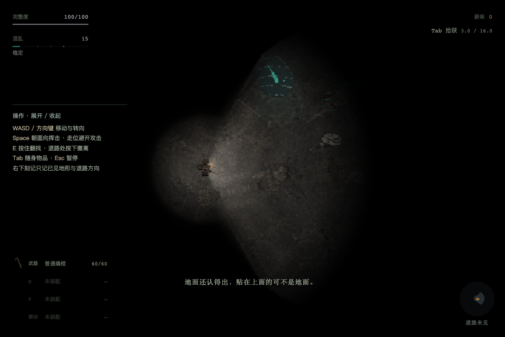

20 个世界 · 正常视野
120 个组合均由正式 v3 生成器与共享绘制在训练入口产生。每组包含自然入场与真实键盘短程行走，固定正常镜头和有限视野。点图可看原始 1152×768 帧；不是全亮地图，也不宣称两帧覆盖整张地图或完整旅程。下沿通行检查另见 三新族 18 组、混合族 14 组。机器索引
120 个组合均由正式 v3 生成器与共享绘制在训练入口产生。每组包含自然入场与真实键盘短程行走，固定正常镜头和有限视野。点图可看原始 1152×768 帧；不是全亮地图，也不宣称两帧覆盖整张地图或完整旅程。下沿通行检查另见 三新族 18 组、混合族 14 组。机器索引